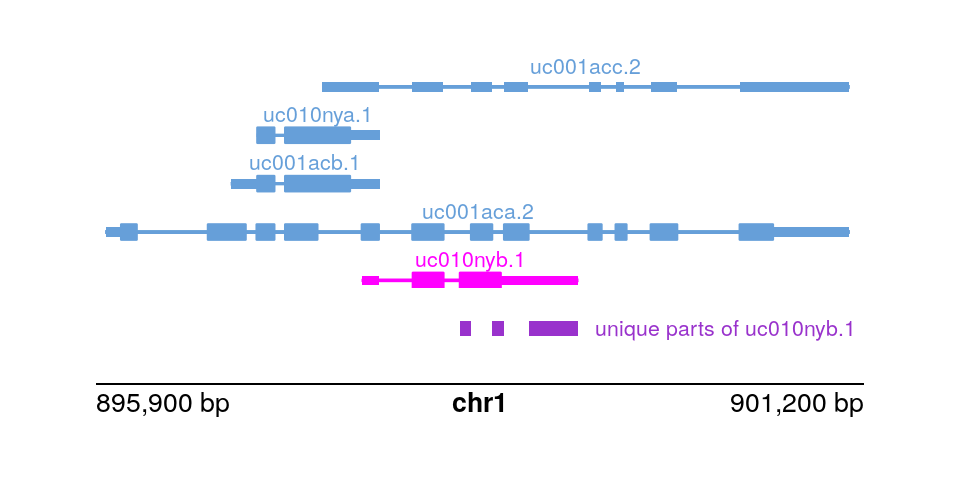

library(TxDb.Hsapiens.UCSC.hg19.knownGene)
txdb <- TxDb.Hsapiens.UCSC.hg19.knownGene
txp <- transcripts(txdb)9 Isoform analysis
Objectives
- Compare the structure of isoforms within a gene using grouping and disjoin operations
There are many packages in Bioconductor that allow for isoform-level analysis across samples (also called transcript-level analysis). Packages that facilitate differential transcript analysis include DEXSeq and DRIMSeq (demonstrated in the rnaseqDTU workflow), and newer packages satuRn and fishpond.
Once you’ve identified isoforms of interest within a gene, perhaps isoforms that switch in terms of their expression after cells are treated, one can use the IsoformSwitchAnalyzeR Bioconductor package to visualize and analyze a set of isoform switches (Vitting-Seerup and Sandelin 2019). For example, one can test the functional consequences of a set of isoform switches in terms of the gain or loss of protein domains, or splicing-centric changes (e.g. alternative 3’ or 5’ acceptor sites, alternative transcription start or ends sites, etc.) IsoformSwitchAnalyzeR is a multi-feature and mature package for this type of analysis, but we can perform some simpler within-gene isoform comparisons using plyranges, mostly for demonstration.
Vitting-Seerup, Kristoffer, and Albin Sandelin. 2019. “IsoformSwitchAnalyzeR: Analysis of Changes in Genome-Wide Patterns of Alternative Splicing and Its Functional Consequences.” Bioinformatics 35 (21): 4469–71.
Here we will suppose that we have somehow identified isoforms of interest, and we want to compare these isoforms to other isoforms of the same gene. For simplicity, we will focus on one isoform per gene, for a particular set of interesting genes, just picking isoforms at random for genes on chr1. We could use plyranges to compare various metadata about isoforms or exons e.g. RNA-seq or ChIP-seq coverage, sequence content, etc. But here we will just compare isoforms alone by the interval definitions. Then to reformulate:
Specific objective 1: compare one isoform per gene to the others, in terms of the extent from TSS to TES. What makes this isoform distinct?
We will start again with the transcript database we’ve used before:
For further operations it will be convenient to have the tx_id be a character variable, and we filter now to a set of genes of interest (here just picking those on chr1):
library(plyranges)
txp <- txp |>
mutate(tx_id = as.character(tx_id)) |>
filter(seqnames == "chr1")It is sometimes useful to have other identifiers, such as the gene ID (Entrez)…
…and the gene symbol. For simplicity we will keep genes that have a non-NA symbol but this step is not necessary.
The following is one way to identify which isoforms belong to multi-isoform genes:
We can now filter to the multi-isoform genes:
txp <- txp |>
filter(ntxp > 1)Here we arbitrarily pick one isoform per gene, first by identifying those in a tibble…
…then we can label these in our txp object. We will track these with an integer, 1 for the isoform of interest, and 0 for the others.
txp <- txp |>
mutate(the_one = as.integer(tx_id %in% pick_one))To identify which “parts” of the TSS-to-TES interval belong to which isoform, we can use disjoin_ranges. This breaks up the ranges, here grouped by gene, into distinct parts, and labels those according to whatever metadata variables we specify. Here we specify to combine tx_id into a collapsed string, but we could also perform numeric operations, e.g. min or mean etc. And we can specify more than one new variable to be created during the disjoin_ranges operation. As with reduce_ranges, this operation can be _directed or not.
txp |>
group_by(gene_id) |>
disjoin_ranges(tx_ids = paste(tx_id,collapse=","))
## GRanges object with 4438 ranges and 2 metadata columns:
## seqnames ranges strand | gene_id
## <Rle> <IRanges> <Rle> | <character>
## [1] chr1 11874-14409 * | 100287102
## [2] chr1 367659-368597 * | 729759
## [3] chr1 621096-622034 * | 729759
## [4] chr1 762971-763177 * | 643837
## [5] chr1 763178-778984 * | 643837
## ... ... ... ... . ...
## [4434] chr1 249144203-249150234 * | 55657
## [4435] chr1 249150235-249152264 * | 55657
## [4436] chr1 249152265-249152912 * | 55657
## [4437] chr1 249152913-249153125 * | 55657
## [4438] chr1 249153126-249153315 * | 55657
## tx_ids
## <character>
## [1] 1,2,3
## [2] 11
## [3] 4099
## [4] 14,15,16,17,18
## [5] 14,15,16,17,18,19
## ... ...
## [4434] 7962,7963,7964,7965,..
## [4435] 7963,7964,7965,7966,..
## [4436] 7964,7965,7966,7967
## [4437] 7965,7966,7967
## [4438] 7966,7967
## -------
## seqinfo: 93 sequences (1 circular) from hg19 genomeHere we try to answer the specific objective, by labeling which parts belong exclusively to the isoform of interest by computing min(the_one) (try to convince yourself that this does in fact identify these intervals).
txp |>
group_by(gene_id) |>
disjoin_ranges(the_one_parts = min(the_one)) |>
filter(the_one_parts > 0)
## GRanges object with 257 ranges and 2 metadata columns:
## seqnames ranges strand | gene_id the_one_parts
## <Rle> <IRanges> <Rle> | <character> <integer>
## [1] chr1 621096-622034 * | 729759 1
## [2] chr1 2407754-2411622 * | 9651 1
## [3] chr1 2495189-2495267 * | 8764 1
## [4] chr1 3689334-3689351 * | 388588 1
## [5] chr1 6268367-6268677 * | 388591 1
## ... ... ... ... . ... ...
## [253] chr1 243651535-243663020 * | 10000 1
## [254] chr1 244571794-244586136 * | 159 1
## [255] chr1 246580715-246670644 * | 64754 1
## [256] chr1 247492918-247495045 * | 84838 1
## [257] chr1 249119835-249120154 * | 80851 1
## -------
## seqinfo: 93 sequences (1 circular) from hg19 genomeDo the parts identified make sense if we check one gene?
txp |>
filter(gene_id == "9651")
## GRanges object with 6 ranges and 6 metadata columns:
## seqnames ranges strand | tx_id tx_name gene_id
## <Rle> <IRanges> <Rle> | <character> <character> <character>
## [1] chr1 2407754-2436964 + | 134 uc001aji.1 9651
## [2] chr1 2411623-2436892 + | 135 uc010nyz.2 9651
## [3] chr1 2411623-2436964 + | 136 uc009vle.1 9651
## [4] chr1 2411623-2436965 + | 137 uc001ajj.1 9651
## [5] chr1 2411623-2436969 + | 138 uc001ajk.1 9651
## [6] chr1 2430183-2436964 + | 139 uc001ajl.1 9651
## symbol ntxp the_one
## <character> <integer> <integer>
## [1] PLCH2 6 1
## [2] PLCH2 6 0
## [3] PLCH2 6 0
## [4] PLCH2 6 0
## [5] PLCH2 6 0
## [6] PLCH2 6 0
## -------
## seqinfo: 93 sequences (1 circular) from hg19 genomeLet’s pause and consider what we’ve answered so far. We asked, for a given isoform per gene, what parts (intervals) uniquely define that isoform, when we just consider TSS-to-TES extent (ignoring the exonic/intronic structure). We started here mostly for simplicity, but typically we care about transcribed sequence, so let’s repeat this task, now considering what exonic parts are unique to one isoform per gene.
Specific objective 2: compare one isoform per gene to the others, in terms of the exonic intervals. What makes this isoform distinct?
To start, we will need a list of the exons, grouped by transcript.
ebt <- exonsBy(txdb, by="tx")
ebt <- ebt[txp$tx_id] # subset to those txp/genes of interestHere, we could have also used bind_ranges but I find that for very large lists of ranges, unlist is faster:
exons <- unlist(ebt) |>
select(exon_id, exon_rank) |>
mutate(tx_id = rep(names(ebt), lengths(ebt)))
exons
## GRanges object with 67595 ranges and 3 metadata columns:
## seqnames ranges strand | exon_id exon_rank tx_id
## <Rle> <IRanges> <Rle> | <integer> <integer> <character>
## 1 chr1 11874-12227 + | 1 1 1
## 1 chr1 12613-12721 + | 3 2 1
## 1 chr1 13221-14409 + | 5 3 1
## 2 chr1 11874-12227 + | 1 1 2
## 2 chr1 12595-12721 + | 2 2 2
## ... ... ... ... . ... ... ...
## 7967 chr1 249149757-249149834 - | 27460 7 7967
## 7967 chr1 249149579-249149657 - | 27459 8 7967
## 7967 chr1 249148136-249148250 - | 27458 9 7967
## 7967 chr1 249144881-249144980 - | 27457 10 7967
## 7967 chr1 249144203-249144715 - | 27456 11 7967
## -------
## seqinfo: 93 sequences (1 circular) from hg19 genomeThe exons ranges are missing some of our key metadata from txp. We can add this, by first select-ing what we want from txp, turning this into a tibble and left_join-ing to the exons. I add an all.equal step to make sure we have the two tables lined up, before we add the extra columns with cbind.
Some of this code wouldn’t be necessary for TranscriptDb with more details exons output, as with ensembldb.
txp_data <- txp |>
select(tx_id, gene_id, ntxp, the_one, .drop_ranges=TRUE) |>
as_tibble()
ids <- dplyr::left_join(
tibble(tx_id = exons$tx_id),
txp_data,
by="tx_id"
)
ids
## # A tibble: 67,595 × 4
## tx_id gene_id ntxp the_one
## <chr> <chr> <int> <int>
## 1 1 100287102 3 1
## 2 1 100287102 3 1
## 3 1 100287102 3 1
## 4 2 100287102 3 0
## 5 2 100287102 3 0
## 6 2 100287102 3 0
## # ℹ 67,589 more rows
all.equal(exons$tx_id, ids$tx_id)
## [1] TRUE
mcols(exons) <- cbind(mcols(exons), ids |> select(-tx_id))
exons
## GRanges object with 67595 ranges and 6 metadata columns:
## seqnames ranges strand | exon_id exon_rank tx_id
## <Rle> <IRanges> <Rle> | <integer> <integer> <character>
## 1 chr1 11874-12227 + | 1 1 1
## 1 chr1 12613-12721 + | 3 2 1
## 1 chr1 13221-14409 + | 5 3 1
## 2 chr1 11874-12227 + | 1 1 2
## 2 chr1 12595-12721 + | 2 2 2
## ... ... ... ... . ... ... ...
## 7967 chr1 249149757-249149834 - | 27460 7 7967
## 7967 chr1 249149579-249149657 - | 27459 8 7967
## 7967 chr1 249148136-249148250 - | 27458 9 7967
## 7967 chr1 249144881-249144980 - | 27457 10 7967
## 7967 chr1 249144203-249144715 - | 27456 11 7967
## gene_id ntxp the_one
## <character> <integer> <integer>
## 1 100287102 3 1
## 1 100287102 3 1
## 1 100287102 3 1
## 2 100287102 3 0
## 2 100287102 3 0
## ... ... ... ...
## 7967 55657 6 0
## 7967 55657 6 0
## 7967 55657 6 0
## 7967 55657 6 0
## 7967 55657 6 0
## -------
## seqinfo: 93 sequences (1 circular) from hg19 genomeWe repeat similar code as performed above with txp, now identifying parts of exons that are unique to the isoform of interest, per gene:
exon_parts <- exons |>
group_by(gene_id) |>
disjoin_ranges(the_one_parts = min(the_one)) |>
filter(the_one_parts > 0)
exon_parts
## GRanges object with 1604 ranges and 2 metadata columns:
## seqnames ranges strand | gene_id the_one_parts
## <Rle> <IRanges> <Rle> | <character> <integer>
## [1] chr1 621096-622034 * | 729759 1
## [2] chr1 776580-778984 * | 643837 1
## [3] chr1 898412-898488 * | 339451 1
## [4] chr1 898634-898716 * | 339451 1
## [5] chr1 898885-899229 * | 339451 1
## ... ... ... ... . ... ...
## [1600] chr1 247301447-247302017 * | 7678 1
## [1601] chr1 247493268-247493383 * | 84838 1
## [1602] chr1 247494734-247495045 * | 84838 1
## [1603] chr1 249120034-249120154 * | 80851 1
## [1604] chr1 249152521-249152710 * | 55657 1
## -------
## seqinfo: 93 sequences (1 circular) from hg19 genomeTo confirm that we’ve identified the right parts, let’s use plotgardener to visualize a particular gene:
txp |>
filter(gene_id == "339451")
## GRanges object with 5 ranges and 6 metadata columns:
## seqnames ranges strand | tx_id tx_name gene_id
## <Rle> <IRanges> <Rle> | <character> <character> <character>
## [1] chr1 895967-901099 + | 55 uc001aca.2 339451
## [2] chr1 896829-897858 + | 56 uc001acb.1 339451
## [3] chr1 897009-897858 + | 57 uc010nya.1 339451
## [4] chr1 897461-901099 + | 58 uc001acc.2 339451
## [5] chr1 897735-899229 + | 59 uc010nyb.1 339451
## symbol ntxp the_one
## <character> <integer> <integer>
## [1] KLHL17 5 0
## [2] KLHL17 5 0
## [3] KLHL17 5 0
## [4] KLHL17 5 0
## [5] KLHL17 5 1
## -------
## seqinfo: 93 sequences (1 circular) from hg19 genome
tx_to_show <- txp |>
filter(gene_id == "339451" & the_one == 1) |>
as_tibble() |>
dplyr::pull(tx_name)
these_parts <- exon_parts |>
filter(gene_id == "339451")We lay out a page zooming into this gene and its isoforms:
library(plotgardener)
par <- pgParams(
chrom = "chr1",
chromstart = 895.9e3, chromend = 901.2e3,
assembly = "hg19", just = c("left", "bottom")
)We will highlight our isoform of interest:
hilite <- data.frame(transcript=tx_to_show, color="magenta")Finally, putting it all together:
pageCreate(width = 5, height = 2.5, showGuides = FALSE)
plotTranscripts(
params = par, x = 0.5, y = 1.5, width = 4, height = 1.5,
transcriptHighlights = hilite
)
plotRanges(
these_parts, fill="darkorchid",
params = par, x = 0.5, y = 1.75, width = 4, height = .25
)
label <- paste("unique parts of", tx_to_show)
plotText(
label = label, fontcolor = "darkorchid",
params = par, x = 3.1, y = 1.75,
just = c("left", "bottom"), fontsize = 8
)
plotGenomeLabel(
params = par, x = 0.5, y = 2, length = 4,
just = c("left", "top")
)
Questions:
- How else could we have found parts of one isoform per gene, that do not belong to any other isoforms of the genes. Would other approaches have any limitations?